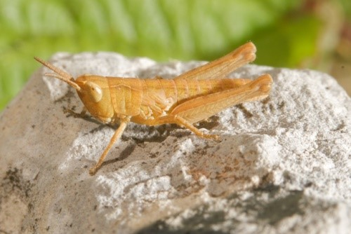
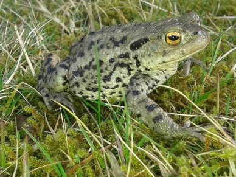

Common Lizard

These lizards bask in the sun in spring and summer, standing on a stone, grass clump or log
Water Vole

Found in small rivers and streams, this small vole could be mistaken for a rat. It may be seen paddling towards its burrow.
Grasshopper

Their powerful back legs allow them to leap fast and long distances. They moult (shed their skin) many times throughout their life before becoming an adult.
Toad

Common toads have warty skin and tend to walk rather than hop. They dig shallow burrows and produce irritating chemicals to put off predators.